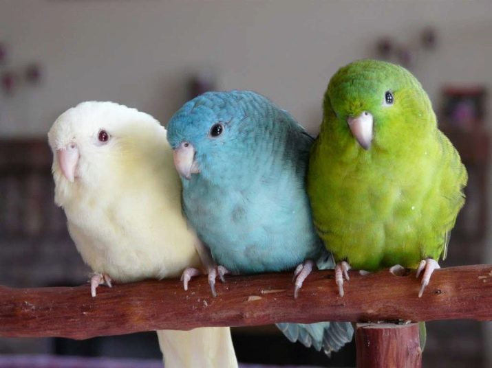

На сегодняшний день в мире живет свыше 350 видов попугаеобразных. Маленькие попугаи завоевали сердца любителей пернатых веселым нравом, любознательностью, непоседливостью и позитивом, которые они дарят своим владельцам. Это юркие, умные, очень красивые создания, способные создать в доме удивительную атмосферу любви и жизнелюбия.
Преимущества маленьких попугайчиков налицо:
занимают немного места;
гораздо менее разрушительные и шумные, чем крупные виды попугаев;
корм, клетка и аксессуары к ней вполне доступны, многое из них, например, ту же клетку, можно сделать своими руками;
цены на мелкие породы попугаев на порядок ниже, чем на другие виды.
